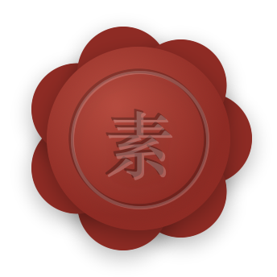
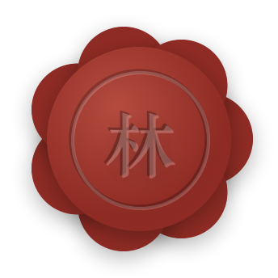
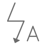
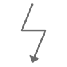

尺素全部图标 · 鸿蒙对照
2026-11-07 iOS 侧出，对应更新包 U19（设置全部页面详解）；U20 改成纯文字 + 代码（DevEco 的 agent 看不见图片：这份不插图，图标只写名字，火漆印给代码）。由 Scripts/make_harmony_icon_catalog.py 生成，不要手改（改脚本里的表再重跑）。
设置各页每一行用哪个图标、放在哪，见同级目录 ../settings_pages/SETTINGS_PAGES.md；这份按「图标」列全 App。
先读这四条
1. App 里的图标分两种：尺素自己画的（设置首页那套线条、火漆印、手写 m. …）→ 给图片，拿来就放；iOS 用苹果 SF Symbols 的 → 不给图片，用鸿蒙系统自带的 HarmonyOS Symbol
2. 🔴 SF Symbols 不许用到鸿蒙上（苹果的授权只许用在苹果的平台）：不要截 iOS 的图标、不要描、不要找网上的 SF Symbols 素材
3. HarmonyOS Symbol 的名字取自华为官方图标库（developer.huawei.com/consumer/cn/design/harmonyos-symbol，名字表 v2.3）。用法：
SymbolGlyph($r('sys.symbol.bell'))
.fontSize(14) // 设置二级页行首 14vp（和 iOS 同号，占 20vp 宽）；别处照 iOS 那一处的大小
.fontColor([主题的图标线色]) // 单色，颜色跟主题（见 settings_icons/GUIDE.md 的颜色表）
表里标「图标库网页没列，字体里有」的，是鸿蒙系统字体里有、但官方图标库网页没展示的名字 —— 在 DevEco 里输 sys.symbol. 看补全核对；真没有就用同一行「意思」找一个最接近的，并告诉 iOS 侧改表。一部分老图标在系统里是 ohos_ 开头（如 sys.symbol.ohos_trash），两个都有时用不带前缀的
4. 这份只有字和代码：图标写名字，自己画的写文件名和尺寸，火漆印给 ArkTS 代码。同目录 preview.html 是给人看的网页版（多一列小图）；harmony_symbols/ 的小图是拿官方字体画的预览，不要拷进工程、也不用打开 —— 工程里用 sys.symbol.*，系统会跟着字号、粗细、深浅色画
一、尺素自己画的（给图片）
设置首页（U10 已交付，图在 ../settings_icons/）
四套主题各一套、带好了圆框和颜色，拷进资源按文件名引用（$r('app.media.文件名')），怎么放见 ../settings_icons/GUIDE.md：
| 图 | 文件名（<主题> 换成主题 id：bamboo / leather / kent / polar） | 显示尺寸 | 用在哪 |
|---|
 | ic_settings_appearance_<主题> | 30vp | 外观 |
 | ic_settings_journal_<主题> | 30vp | 日记 |
 | ic_settings_penpal_<主题> | 30vp | 笔友 |
 | ic_settings_location_<主题> | 30vp | 位置与天气 |
 | ic_settings_language_<主题> | 30vp | 语言 |
 | ic_settings_data_<主题> | 30vp | 数据与备份 |
 | ic_settings_stats_<主题> | 30vp | 写作统计 |
 | ic_settings_rate_<主题> | 30vp | 给我们评分（华为应用市场的购物袋） |
 | ic_settings_feedback_<主题> | 30vp | 反馈与建议 |
 | ic_settings_about_<主题> | 30vp | 关于 |
 | ic_follow_xiaohongshu_<主题> | 30vp | 关注我们 · 小红书 |
 | ic_follow_douyin_<主题> | 30vp | 关注我们 · 抖音 |
 | ic_follow_weibo_<主题> | 30vp | 关注我们 · 微博 |
 | img_avatar_mark_<主题> | 60vp | 账户卡头像（手写 m.） |
火漆印（尺素会员）—— 这次新出
一枚深红的蜡、边缘不规则地溢开一圈、中间压一个字。四套主题都是同一个颜色（蜡的颜色不跟主题）。iOS 是纯代码画的（Views/Components/WaxSeal.swift：七个圆 + 一个径向渐变 + 两道细圈 + 两层字），鸿蒙照下面这段 ArkTS 一一对应地画，不用图片：
// 火漆印。和 iOS WaxSeal.swift 一一对应：size = 印的直径（vp），mark = 压的字（规则见下）
// 颜色写成 ARGB：#47000000 = 黑 28%，#38FFFFFF = 白 22%，#38000000 = 黑 22%，#2EFFFFFF = 白 18%，#40000000 = 黑 25%
@Component
export struct WaxSeal {
@Prop size: number = 64
@Prop mark: string = '素'
build() {
Stack() { // 默认居中对齐；后写的叠在上面
// 1. 溢开的蜡：7 个实心圆，直径 size×0.42，颜色 #8E2B24；
// 圆心在以印中心为圆心、半径 size×0.31 的圆周上，第 i 个的角度 = i/7×360°（0° 在正右方，往下转）
ForEach([0, 1, 2, 3, 4, 5, 6], (i: number) => {
Column()
.width(this.size * 0.42).height(this.size * 0.42)
.borderRadius(this.size * 0.21)
.backgroundColor('#8E2B24')
.offset({ x: Math.cos(i / 7 * 2 * Math.PI) * this.size * 0.31,
y: Math.sin(i / 7 * 2 * Math.PI) * this.size * 0.31 })
})
// 2. 蜡面：直径 size×0.84 的圆，径向渐变 #B54A3E（中心）→ #8E2B24（半径 size×0.5 处），
// 渐变中心在这个圆的左上：横 38%、竖 32%
Column()
.width(this.size * 0.84).height(this.size * 0.84)
.borderRadius(this.size * 0.42)
.radialGradient({
center: [this.size * 0.84 * 0.38, this.size * 0.84 * 0.32],
radius: this.size * 0.5,
colors: [['#B54A3E', 0], ['#8E2B24', 1]]
})
// 3. 压印的内圈：直径 size×0.62 的细圈，黑 22%、线宽 size×0.02
Column()
.width(this.size * 0.62).height(this.size * 0.62)
.borderRadius(this.size * 0.31)
.borderWidth(this.size * 0.02).borderColor('#38000000')
// 4. 同一圈的受光边：白 18%、线宽 size×0.015，往右下各偏 size×0.008
Column()
.width(this.size * 0.62).height(this.size * 0.62)
.borderRadius(this.size * 0.31)
.borderWidth(this.size * 0.015).borderColor('#2EFFFFFF')
.offset({ x: this.size * 0.008, y: this.size * 0.008 })
// 5. 字：底层黑 28%
Text(this.mark)
.fontSize(`${this.size * 0.32}vp`) // 用 vp，不跟系统字体大小缩放
.fontWeight(600) // 半粗
.fontColor('#47000000')
// 6. 字：上层白 22%，往右下各偏 size×0.012 —— 压进蜡里、一边受光
Text(this.mark)
.fontSize(`${this.size * 0.32}vp`)
.fontWeight(600)
.fontColor('#38FFFFFF')
.offset({ x: this.size * 0.012, y: this.size * 0.012 })
}
.width(this.size).height(this.size) // 七个圆会探出这个框一点点，不要裁
.shadow({ radius: 3, color: '#40000000', offsetX: 0, offsetY: 2 }) // 整枚印一个影子：黑 25%、模糊 3、往下 2
.accessibilityLevel('no') // 印本身不念；它所在的那一行 / 那个标记念「尺素会员」
}
}
- 字体：iOS 是系统的衬线体（design: .serif）。鸿蒙系统里有衬线中文字体就用它，没有就用默认的 HarmonyOS Sans，字重都是 600
- 印面的字不翻译、不跟语言变
- 验收（按数字核对，不用比图）：size 26 时七个小圆直径 10.92vp、蜡面 21.84vp、内圈 16.12vp、字号 8.32vp；四套主题下颜色不变；读屏不念印上的字
- iOS 侧也导出了现成的图（wax_seal/，四倍图），用代码画就不需要它们；实在要用图时：img_wax_seal_blank.png 是空白印面（印的直径 = 图片边长 × 68⁄86，字照上面第 5、6 步叠上去），img_member_badge.png 是压「素」的小标记（印的直径 = 图片边长 × 18⁄30）
| 图 | 文件 | 说明 |
|---|
| wax_seal/img_wax_seal_blank.png | 空白印面（鸿蒙用这张，上面自己压字） |
 | wax_seal/sample_wax_seal_su.png | 样张：没有昵称时压「素」 |
| wax_seal/sample_wax_seal_A.png | 样张：昵称 Alice → A |
 | wax_seal/sample_wax_seal_lin.png | 样张：昵称 林间 → 林 |
| wax_seal/sample_wax_seal_row_26pt.png | 样张：设置首页那行的大小（26pt） |
| wax_seal/img_member_badge.png | 会员款小标记（压「素」，16–18pt，固定的，直接用） |
用在哪（大小是印本身的直径，就是 WaxSeal 的 size）：
| 位置 | 大小 | 压什么字 |
|---|
| 设置首页「尺素会员」那一行的行首（不套框，占 30vp 宽，和下面各行的字对齐） | 26vp | 用户昵称的首字 |
| 付费页顶上 | 68vp | 用户昵称的首字 |
| 会员页（已开通，设置 → 尺素会员）顶上 | 60vp | 用户昵称的首字 |
| 会员款旁边的小标记，只给还不是会员的人看：设置 → 日记 → 照片相纸样式（名字后面隔 12vp）、尺素相机选相纸、日记本封面版式（右上角） | 16vp | 固定「素」 |
| 同上：写日记插照片时选相纸（右上角） | 18vp | 固定「素」 |
| 写作统计「情绪小结」卡片标题后面（不是会员时） | 15vp | 固定「素」 |
| 读完一封来信，页底一行「想让笔友每篇都回？了解尺素会员」的行首（不是会员时，点了开付费页） | 16vp | 固定「素」 |
会员小标记就是 WaxSeal({ size: 16, mark: '素' })，外面那一层读屏念「尺素会员」。
压什么字（照 iOS WaxSeal.initial(of:)）：昵称去掉首尾空白后的第一个字；中文取第一个字，拉丁字母取首字母并大写；没昵称、或第一个字是表情 / 符号 / 数字 → 压「素」。
其他自己画的部件（不是小图标，规格在各自的更新包里）
| 是什么 | 规格在哪 | iOS 源码 |
|---|
| 手写 m.（桌面图标、开场、账户卡头像、锁屏提醒） | U09（字形）、U17（矢量母版） | Views/Splash/HandwrittenMark.swift |
| 邮戳上的 Sinara 标、精装 PDF 版权页的标 | U05、U08 | Assets.xcassets/SinaraMark |
| 火漆信封口的火漆（压笔友名字的首字） | U01 / U05 草稿 | Views/PostBox/Envelope/SealedEnvelope.swift（同一个 WaxSeal） |
| 投信那叠信上的勾选小方框 | U05 草稿 | Views/PostBox/Posting/OutgoingPile.swift 的 CheckMark |
| 拆信 / 推信的手势示意（箭头） | U13 草稿 | Views/PostBox/Envelope/SealedLetterOpener.swift 的 GestureCue |
| 世界地图上的「你」和笔友墨点 | U01 草稿 | Views/PostBox/WorldMap/PenPalMapMarks.swift |
| 心情标记前的小圆点（九档各一色） | U03 | Views/Components/MoodBadge.swift |
| 心情页的线团爱心 | U03 | Views/Mood/ScribbleHeartDrawing.swift |
| 日记本封面、书脊、杂志封面 | U07 | Views/Home/BookCoverView.swift、Shelf/ShelfBookView.swift |
二、iOS 用 SF Symbols 的每一处 → 鸿蒙系统图标
「iOS」一列只为说明是哪个图标、方便对照 iOS 源码，鸿蒙不要找它的图。同一个意思在不同页用同一个鸿蒙图标。
底栏、提示条、桌面快捷方式
| 预览 | 鸿蒙 sys.symbol. | 位置 | 意思 | iOS | 备注 |
|---|
| book_pages_fill_1
小说 | 底栏「记录」 | 日记 | book.fill | |
| books_vertical_fill
（图标库网页没列，字体里有，DevEco 里核对） | 底栏「日记本」 | 一排书 | books.vertical.fill | |
| envelope_fill
邮件/消息 | 底栏「邮筒」 | 信 | envelope.fill | |
| gearshape
设置 | 底栏「设置」 | 齿轮 | gearshape | |
 | magnifyingglass
搜索/查询/查找/search | 底栏最右的搜索（设置里打开才有，U12） | 搜索 | magnifyingglass | |
| checkmark_circle
清单/钩/勾选 | 顶上提示条：成功 | 成功 | checkmark.circle | |
| exclamationmark_circle
异常、错误/感叹号 | 顶上提示条：失败 | 出错 | exclamationmark.circle | |
 | info_circle
模式详情 | 顶上提示条：提醒 | 提示 | info.circle | |
 | square_grid_2x2
检测项_应用 | 桌面长按图标的快捷菜单「应用图标」 | 应用 | app.badge | 鸿蒙仓库 7662e71 已用这个 |
设置首页（行首图标是自己画的，见第一节；这里是行尾）
| 预览 | 鸿蒙 sys.symbol. | 位置 | 意思 | iOS | 备注 |
|---|
 | chevron_right
下一步/向右 | 进下一页的行尾 > | 进入 | chevron.right | |
| arrow_right_up_and_square
新页签打开 | 外跳的行尾 ↗（给我们评分、反馈与建议、关注我们） | 跳到别的 App | arrow.up.right | 官方中文名「新页签打开」 |
设置 → 外观
| 预览 | 鸿蒙 sys.symbol. | 位置 | 意思 | iOS | 备注 |
|---|
 | paintbrush
画笔 | 「主题选择」行 | 画笔 | paintbrush | |
| square_grid_2x2
检测项_应用 | 「应用图标」行 | 应用 | app.badge | 同桌面快捷方式 |
 | wand_and_stars
（图标库网页没列，字体里有，DevEco 里核对） | 「启动动画」行 | 闪光 | sparkles | |
| magnifyingglass
搜索/查询/查找/search | 「搜索日记」行 | 搜索 | magnifyingglass | |
 | rectangle_on_rectangle
相册 | 「手记页」行（当前是大屏时） | 一张叠一张 | rectangle.on.rectangle | 图标跟着当前选的样式换 |
 | list_bullet
项目符号-圆点 | 「手记页」行（当前是列表时） | 列表 | list.bullet | |
 | checkmark_circle_fill
口算批改/钩/勾选 | 主题选择页：选中的那套主题右边 | 已选 | checkmark.circle.fill | |
 | chevron_down
向下 | 主题介绍弹窗：「出处」收起时 | 展开 | chevron.down | |
 | chevron_up
向上 | 主题介绍弹窗：「出处」展开时 | 收起 | chevron.up | |
| paintbrush
画笔 | 应用图标页：「跟随主题」那一格 | 画笔 | paintbrush | |
 | checkmark
确认/钩/勾选 | 应用图标页：选中的那个右边 | 已选 | checkmark | |
 | picture
图片 | 应用图标页：图标素材缺了时的占位 | 图片 | photo | 正常看不到 |
设置 → 日记
| 预览 | 鸿蒙 sys.symbol. | 位置 | 意思 | iOS | 备注 |
|---|
| picture
图片 | 「照片相纸样式」行 | 照片 | photo.on.rectangle | |
 | calendar
日历 | 「封条提醒天数」行 | 日历 | calendar.badge.exclamationmark | 这一行鸿蒙不做（v1 Q10），列出来备查 |
 | bell
响铃、通知/铃声/铃铛 | 「提醒写日记」行 | 铃铛 | bell | U18 |
 | clock
时长 | 「时间」行 | 时钟 | clock | U18 |
 | repeat
循环播放 | 「重复」行 | 重复 | repeat | U18 |
| checkmark
确认/钩/勾选 | 照片相纸样式页：选中的样式右边 | 已选 | checkmark | |
设置 → 笔友 / 位置与天气 / 语言
| 预览 | 鸿蒙 sys.symbol. | 位置 | 意思 | iOS | 备注 |
|---|
 | person
账号 | 笔友：「笔友名」行 | 人 | person.crop.circle | |
 | local
位置/定位 | 位置与天气：「记录位置」行 | 定位 | location | |
 | scope
开启目标追踪 | 位置与天气：「位置精度」行 | 准星 | scope | |
| checkmark
确认/钩/勾选 | 语言页：当前语言右边 | 已选 | checkmark | |
设置 → 数据与备份
| 预览 | 鸿蒙 sys.symbol. | 位置 | 意思 | iOS | 备注 |
|---|
 | icloud
云开启 | 「iCloud 同步」行：同步正常 | 云 + 勾 | checkmark.icloud | 官方中文名「云开启」；鸿蒙同步方案见 v1 |
 | exclamationmark_cloud_fill
异常 | 「iCloud 同步」行：没同步上 | 云 + 叹号 | exclamationmark.icloud | |
 | livephoto
动态照片 | 「同步 Live Photo 视频」行 | 实况照片 | livephoto | 这一行鸿蒙不做（v1 Q10） |
 | share
分享 | 「导出备份」行；导出页生成后的「分享」按钮 | 分享出去 | square.and.arrow.up | |
 | download
附件下载 | 「导入备份」行 | 拿进来 | square.and.arrow.down | |
 | externaldrive
移动存储设备 | 「照片与录音占用」行 | 存储 | internaldrive | |
 | clean
清理加速 | 「清理 N 个残留文件」行 | 清理 | sparkles | 有残留文件才出现 |
 | exclamationmark_triangle
内容举报/感叹号 | 导出页 / 导入页里的警告 | 警告 | exclamationmark.triangle | |
 | checkmark_square_fill
已选/钩/勾选 | 导出页「我已了解…」勾上 | 勾选 | checkmark.square.fill | |
 | square
方形 | 导出页「我已了解…」没勾 | 未勾 | square | |
设置 → 写作统计 / 关于
| 预览 | 鸿蒙 sys.symbol. | 位置 | 意思 | iOS | 备注 |
|---|
 | chevron_left
返回/向左 | 写作统计：日历往前翻一个月；左上角返回 | 往前 | chevron.left | |
| chevron_right
下一步/向右 | 写作统计：日历往后翻一个月；情绪小结「往期小结 >」 | 往后 | chevron.right | |
 | info_shield
隐私声明 | 关于：「隐私政策」行 | 隐私 | lock.shield | 官方中文名就叫「隐私声明」 |
 | doc_text
日志/文本/文件 | 关于：「用户协议」行 | 文档 | doc.text | |
| info_circle
模式详情 | 关于：「版本」行 | 信息 | info.circle | |
设置 → 账户、注销账号
| 预览 | 鸿蒙 sys.symbol. | 位置 | 意思 | iOS | 备注 |
|---|
 | rename
重命名 | 「昵称」行 | 签名 | signature | |
 | phone
通话音量/电话 | 「手机号」行（绑过） | 手机 | iphone | |
| exclamationmark_triangle
内容举报/感叹号 | 「绑定手机号」行（没绑，红字「未绑定」） | 警告 | exclamationmark.triangle | |
| — | （鸿蒙没有这一处） | 「Apple ID」/「绑定 Apple ID」行 | 苹果 | applelogo | 鸿蒙没有这两行；华为账号的行见 U02 |
 | arrow_right_to_line
（图标库网页没列，字体里有，DevEco 里核对） | 「退出登录」行 | 离开 | rectangle.portrait.and.arrow.right | |
 | person_xmark
（图标库网页没列，字体里有，DevEco 里核对） | 「注销账号」行（红色） | 删人 | person.crop.circle.badge.xmark | |
| trash
删除/垃圾箱/回收站 | 注销页第一步：会删掉什么 | 删除 | trash | |
 | ebook
电子书 | 注销页第一步：日记不受影响 | 书 | book.closed | |
| arrowshape_turn_up_left
回复 | 注销页第一步：不能撤回 | 回头 | arrow.uturn.backward | |
尺素会员（付费页、会员页）
| 预览 | 鸿蒙 sys.symbol. | 位置 | 意思 | iOS | 备注 |
|---|
 | xmark
退出/关闭/取消/colse | 付费页左上角关闭 | 关闭 | xmark | |
 | envelope_open
打开邮件 | 权益：每周 20 张邮票 | 拆开的信 | envelope.open | |
 | seal
（图标库网页没列，字体里有，DevEco 里核对） | 权益：火漆封口的信 | 印章 | seal | 图标本身不是火漆印；页顶那枚大火漆印是图片，见第一节 |
 | worldclock
语言切换 | 权益：今雨与雅故 | 地球 | globe | 官方中文名「语言切换」，画的是地球 |
 | point_bottomleft_forward_to_point_topright_scurvepath
（图标库网页没列，字体里有，DevEco 里核对） | 权益：情绪小结 | 折线图 | chart.xyaxis.line | 一条起伏的走势线 |
| picture
图片 | 权益：全部相纸与封面版式 | 照片 | photo.on.rectangle | |
| ebook
电子书 | 权益：印成一本书 | 书 | book.closed | |
| checkmark_circle_fill
口算批改/钩/勾选 | 方案（年付 / 月付）选中 | 已选 | checkmark.circle.fill | |
 | circle
工具箱 | 方案没选中 | 空圈 | circle | |
写日记、编辑、此时此地
| 预览 | 鸿蒙 sys.symbol. | 位置 | 意思 | iOS | 备注 |
|---|
| chevron_left
返回/向左 | 写日记左上角返回（退出 ≠ 丢弃，见 v1） | 返回 | chevron.left | |
| checkmark
确认/钩/勾选 | 写日记 / 编辑右上角完成 | 完成 | checkmark | |
| xmark
退出/关闭/取消/colse | 编辑页关闭；选日记本页关闭 | 关闭 | xmark | |
| camera
拍照 | 工具栏：拍照 | 相机 | camera | |
| picture
图片 | 工具栏：从相册插照片 | 照片 | photo | |
| mic
语音/话筒/麦克风 | 工具栏：录音（一篇最多 3 段，满了变淡点不动） | 麦克风 | mic | |
| pencil_line_1
高亮色 | 空白页的提示笔 | 笔 | pencil.line | |
| local
位置/定位 | 「此时此地」按钮（开着记录位置时） | 定位 | location | |
 | thermometer_medium
（图标库网页没列，字体里有，DevEco 里核对） | 「此时此地」按钮（关了记录位置，只取天气） | 温度计 | thermometer.medium | |
 | local_slash_fill
禁用GPS/关闭 | 地点：不显示位置 / 没取到 | 不定位 | location.slash | |
| chevron_down
向下 | 地点右边：点开换地点 | 展开 | chevron.down | |
 | arrow_clockwise
邮件刷新 | 天气没取到：重试 | 重试 | arrow.clockwise | |
 | local_fill
定位/位置 | 此时此地标记里，地名前的小定位 | 定位 | location.fill | 日记卡片、详情页同一个标记 |
| checkmark
确认/钩/勾选 | 换地点的弹窗：当前选中的地点 | 已选 | checkmark | |
| bold
加粗 | 正文工具条：加粗 | 加粗 | bold | |
| italic
（图标库网页没列，字体里有，DevEco 里核对） | 正文工具条：斜体 | 斜体 | italic | |
| textformat_size_square
字体大小/识别文字 | 正文工具条：小标题 | 字号 | textformat.size | |
| pencil_line_1
高亮色 | 正文工具条 / 选中文字菜单：荧光笔 | 荧光笔 | highlighter | 官方中文名「高亮色」 |
| strikethrough
（图标库网页没列，字体里有，DevEco 里核对） | 选中文字菜单：删除线 | 删除线 | strikethrough | |
| arrow_left
返回 | 长按照片菜单：移到左边 | 往左 | arrow.left | |
| arrow_right
箭头/向右 | 长按照片菜单：移到右边 | 往右 | arrow.right | |
| star
获赞与收藏/五角 | 长按照片菜单：设为封面（大屏模式） | 星 | star | |
| star_slash
取消收藏 | 长按照片菜单：取消封面 | 取消星 | star.slash | |
| picture_2
从图库中选择 | 长按照片菜单：换相纸 | 相框 | photo.artframe | |
| trash
删除/垃圾箱/回收站 | 长按照片菜单：删除 | 删除 | trash | |
| cut
截取/剪刀 | 正文里照片剪下来的小剪刀标 | 剪刀 | scissors | |
| play_fill
播放 | 录音卡片：播放 | 播放 | play.fill | 大屏卡片的录音也一样 |
| pause
暂停 | 录音卡片：暂停 | 暂停 | pause.fill | |
| xmark_circle_fill
取消/关闭/退出/colse | 录音卡片：去掉这段录音 | 去掉 | xmark.circle.fill | |
尺素相机
| 预览 | 鸿蒙 sys.symbol. | 位置 | 意思 | iOS | 备注 |
|---|
| xmark
退出/关闭/取消/colse | 左上角关闭 | 关闭 | xmark | |
| arrow_2_circlepath
旋转、切换 | 切换前后镜头 | 翻转 | arrow.triangle.2.circlepath | |
 | camera_flash_auto
（图标库网页没列，字体里有，DevEco 里核对） | 闪光灯：自动 | 闪光自动 | bolt.badge.a | |
 | camera_flash
（图标库网页没列，字体里有，DevEco 里核对） | 闪光灯：开 | 闪光开 | bolt.fill | |
| camera_flash_slash
（图标库网页没列，字体里有，DevEco 里核对） | 闪光灯：关 | 闪光关 | bolt.slash | |
| rectangle_on_rectangle
相册 | 选相纸 | 一叠 | square.stack | |
| chevron_up
向上 | 相纸列表展开 | 展开 | chevron.up | |
| camera
拍照 | 取景框没起来时的占位 | 相机 | camera | |
| camera_slash_fill
禁用相机/关闭 | 没有相机权限时 | 相机不可用 | camera.badge.ellipsis | |
记录页、日记本、详情
| 预览 | 鸿蒙 sys.symbol. | 位置 | 意思 | iOS | 备注 |
|---|
| plus
增加/添加 | 记录页右上角写日记；日记本页新建；选日记本时新建 | 加 | plus | |
| chevron_right
下一步/向右 | 列表「按月份」那张卡片 | 进入 | chevron.right | |
| more
更多 | 日记本右上角「…」；照片全屏右上角「…」 | 更多 | ellipsis | |
| paintbrush
画笔 | 日记本「…」：编辑封面 | 画笔 | paintbrush | |
| rename
重命名 | 日记本「…」：重命名；详情页编辑 | 笔 | pencil | |
| ebook
电子书 | 日记本「…」：精装 PDF | 书 | book.closed | |
| trash
删除/垃圾箱/回收站 | 日记本「…」：删除；详情页删除 | 删除 | trash | |
| list_bullet
项目符号-圆点 | 日记本里：列表排法 | 列表 | list.bullet | |
| square_grid_2x2
检测项_应用 | 日记本里：格子排法 | 格子 | square.grid.3x3 | |
| square_and_pencil
编辑 | 日记本里：在这本里写一篇 | 写 | square.and.pencil | |
| picture
图片 | 编辑封面：还没有照片时 | 照片 | photo.on.rectangle.angled | |
| picture
图片 | 编辑封面：更换照片 | 照片 | photo | |
| crop
裁剪 | 编辑封面：调整构图 | 裁切 | crop | |
| xmark_circle
关闭/退出/取消/colse | 编辑封面：移除照片 | 去掉 | xmark.circle | |
| arrow_left_arrow_right
（图标库网页没列，字体里有，DevEco 里核对） | 照片全屏「…」：移到左侧 / 右侧 | 左右换 | arrow.left.arrow.right | |
| rectangle_on_rectangle
相册 | 照片全屏「…」：更换相纸样式 | 换一张 | square.on.square | |
| chevron_left
返回/向左 | 阅读器、心情页左上角返回 | 返回 | chevron.left | |
精装 PDF
| 预览 | 鸿蒙 sys.symbol. | 位置 | 意思 | iOS | 备注 |
|---|
| xmark
退出/关闭/取消/colse | 导出页关闭 | 关闭 | xmark | |
| share
分享 | 导出页：分享 PDF | 分享 | square.and.arrow.up | |
| printer
（图标库网页没列，字体里有，DevEco 里核对） | 导出页：怎么打印 | 打印机 | printer | |
| doc_text
日志/文本/文件 | 打印说明：A5 大小 | 文档 | doc.text | |
| rectangle_on_rectangle
相册 | 打印说明：单面也能装订 | 两张纸 | doc.on.doc | |
| books_vertical_fill
（图标库网页没列，字体里有，DevEco 里核对） | 打印说明：做成一本真正的书 | 书 | books.vertical | |
| waveform
（图标库网页没列，字体里有，DevEco 里核对） | PDF 正文里「一段录音」的标记 | 声波 | waveform | 画在 PDF 里，鸿蒙自己的 PDF 用同一个意思 |
邮筒、信箱、世界笔友
| 预览 | 鸿蒙 sys.symbol. | 位置 | 意思 | iOS | 备注 |
|---|
| inbox
（图标库网页没列，字体里有，DevEco 里核对） | 邮筒页：信箱 | 收件匣 | tray | |
| worldclock
语言切换 | 邮筒页：按所在经度显示的地球（亚洲 / 大洋洲） | 地球 | globe.asia.australia | 鸿蒙没有分区域的地球，一律用这个 |
| worldclock
语言切换 | 同上（欧洲 / 非洲） | 地球 | globe.europe.africa | |
| worldclock
语言切换 | 同上（美洲） | 地球 | globe.americas | |
| plus_circle
附件区/添加/增加 | 投信那叠信：再加一封 | 加 | plus.circle | |
| arrow_left_arrow_right
（图标库网页没列，字体里有，DevEco 里核对） | 信件详情：翻面看译文 / 原文 | 翻面 | arrow.left.arrow.right | 和 iOS 一样用左右箭头 |
| chevron_right
下一步/向右 | 信箱分组行、求助卡片 | 进入 | chevron.right | |
| envelope
消息/邮件 | 笔友名片：写信给 TA | 信 | envelope | |
| sun_max
曝光/亮度 | 笔友名片：对方那边是白天 | 太阳 | sun.max | |
| moon
免打扰/月亮 | 笔友名片：对方那边是夜里 | 月亮 | moon | |
| checkmark
确认/钩/勾选 | 笔友名片：已选为收件人 | 已选 | checkmark | |
| location_up
导航 | 世界地图：回到我的位置 | 定位 | location | |
| envelope_fill
邮件/消息 | 世界地图：在路上的信 | 信 | envelope.fill | |
| worldclock
语言切换 | 求助卡片：网站 | 地球 | globe | |
| phone
通话音量/电话 | 求助卡片：电话 | 电话 | phone | |
三、天气图标（此时此地、日记卡片、详情页）
日记里存的天气标识 weatherCode 是苹果天气给的 SF Symbols 名（sun.max、cloud.sun.rain、moon.stars …；旧日记是 clear / rain 这类代码）—— 见 v1 05_DATA_MODEL.md、Q7。
鸿蒙显示时按下表：从上往下看名字里含不含左边的词，先匹配的先用（cloud.bolt.rain 先碰到 bolt → 雷阵雨）；一个都不含的显示 cloud。
鸿蒙自己写天气时，写成 iOS 认得的名字（就用表里「意思」对应的那个 SF Symbols 名，如晴天白天写 sun.max、小雨写 cloud.drizzle）—— iOS 读到不认识的名字会退成一朵云，不会出错。
| 预览 | 名字里含 | 意思 | 鸿蒙 sys.symbol. |
|---|
| bolt / thunder | 雷阵雨、雷暴 | thunderstorm
（图标库网页没列，字体里有，DevEco 里核对） |
| tornado | 龙卷风 | tornado
（图标库网页没列，字体里有，DevEco 里核对） |
| hurricane / tropicalstorm | 台风、热带风暴 | typhoon
（图标库网页没列，字体里有，DevEco 里核对） |
| sleet | 雨夹雪 | sleet
（图标库网页没列，字体里有，DevEco 里核对） |
| hail | 冰雹 | hail
（图标库网页没列，字体里有，DevEco 里核对） |
| snow | 雪 | moderatesnow
（图标库网页没列，字体里有，DevEco 里核对） |
| heavyrain | 大雨 | heavy_rain
（图标库网页没列，字体里有，DevEco 里核对） |
| drizzle | 毛毛雨 | light_rain
（图标库网页没列，字体里有，DevEco 里核对） |
| rain | 雨 | moderate_rain
（图标库网页没列，字体里有，DevEco 里核对） |
| fog | 雾 | foggy
（图标库网页没列，字体里有，DevEco 里核对） |
| smoke | 烟 | smoke_fill
（图标库网页没列，字体里有，DevEco 里核对） |
| dust | 浮尘、沙尘 | dust_storm
（图标库网页没列，字体里有，DevEco 里核对） |
| haze | 霾 | haze
（图标库网页没列，字体里有，DevEco 里核对） |
| wind | 大风 | wind
（图标库网页没列，字体里有，DevEco 里核对） |
| thermometer.sun / hot | 酷热 | thermometer_sun_fill
（图标库网页没列，字体里有，DevEco 里核对） |
| thermometer.snowflake / frigid | 严寒 | thermometer_snowflake
（图标库网页没列，字体里有，DevEco 里核对） |
| cloud.sun | 少云（白天） | cloud_sun_fill
（图标库网页没列，字体里有，DevEco 里核对） |
| cloud.moon | 少云（夜里） | cloud_moon_fill
（图标库网页没列，字体里有，DevEco 里核对） |
| cloud | 多云、阴 | cloud
（图标库网页没列，字体里有，DevEco 里核对） |
| moon | 晴（夜里） | moon
免打扰/月亮 |
| sun / clear | 晴（白天） | sun_max
曝光/亮度 |
天气图标颜色跟着所在那一行字的颜色（iOS 是次要文字色），大小比那一行的字小一号；地名前的小定位比天气图标再小 1。
四、以后改了怎么办
iOS 侧改 Scripts/make_harmony_icon_catalog.py 里的表（或改了 WaxSeal.swift，同时改上面那段 ArkTS）后重跑，整个 icons/ 目录重出，并写进新的更新包；鸿蒙按新表换 sys.symbol 名、按新代码改 WaxSeal。不要在鸿蒙这边手改图。